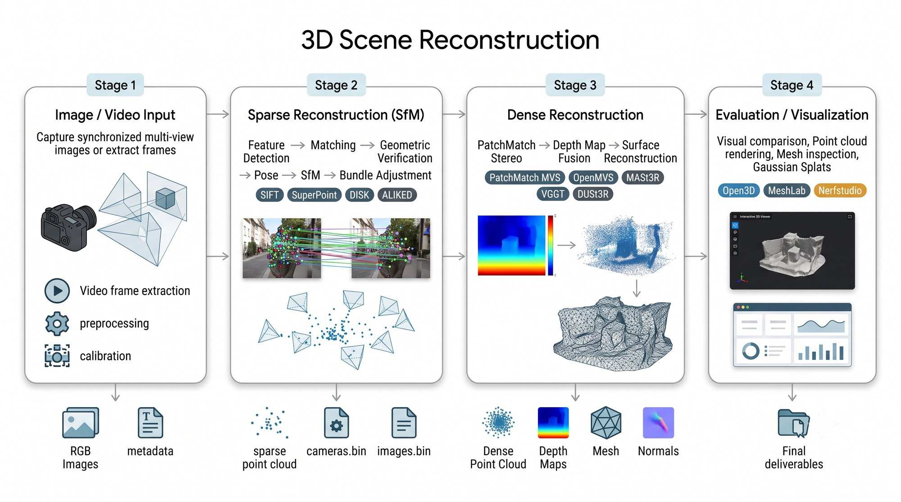

Abstract
This blog documents the implementation and evaluation of multiple 3D reconstruction pipelines, including feature-based SfM methods, dense reconstruction techniques, and transformer-based feed-forward models. Rather than benchmarking numerical metrics alone, the focus is on visually comparing the resulting sparse and dense point clouds while explaining the architecture and processing stages of each pipeline. The final section highlights the bottlenecks encountered during development and outlines future work as the research continues.
Method & pipeline
Every method in this study is evaluated along the same pipeline, from raw capture to a registered point cloud.

Classical / correspondence-based
- Aliked
- SuperPoint + SuperGlue
- DISK
- LoFTR
- LightGlue
- GLOMAP
Feed-forward / transformer-based
- MASt3R
- VGGT
Comparison & visualization
Each cell below is one method's reconstruction of one dataset. Click any thumbnail — or a method card below the viewer — to load that point cloud into the interactive viewer for a closer look.
Status & bottlenecks
This project is actively being worked on. Logged here in the order they came up — edit freely as your work progresses.
- done Sparse and dense reconstruction pipelines integrated — COLMAP, VGGT, hloc
- blocked VGGT and Mast3r and other large reconstruction based models consume huge gpu space and run into OOM erros frequently. Dense reconstruction is required time and again for the classical COLMAP / correspondence based algorithms.This consumes huge gpu space and time.
-
in progress
Currently working on a new pipeline that does end-to-end 3D Gaussian reconstruction from a video / images.
The best and compatiable pipeline identified for the same is : Video/images --> Mast3r --> Dense Reconstruction --> 3D Gaussians - planned Mesh fusion and cleanup pass on registered point clouds
Future work and Scope
Digital twin reconstruction
Extending the pipeline toward full digital-twin-grade reconstructions of real environments — combining the strongest sparse and dense stages found in this comparison.
Future Directions
Such models have broad applications in robotic navigation and autonomous systems, industrial inspection and structural analysis,and AR/VR-based visualization and simulation.
Acknowledgements
This work was carried out as part of a research internship at IIT Roorkee, building on several open-source reconstruction pipelines and under the guidance of Hrishikesh Sir and Aarti Ma'am.